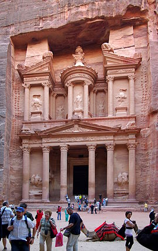

Está ubicada en Jordania y es una de las nuevas siete maravillas del mundo moderno.
El asentamiento de Petra se localiza en un valle angosto, al este del valle de la Aravá que se extiende desde el mar Muerto hasta el Golfo de Aqaba. Los restos más célebres de Petra son sin duda sus construcciones labradas en la misma roca del valle (hemispeos), en particular, los edificios conocidos como el Khazneh (el Tesoro) y el Deir (el Monasterio). Fundada en la antigüedad hacia el final de siglo VIII a. C. por los edomitas, fue ocupada en el siglo VI a. C. por los nabateos que la hicieron prosperar gracias a su situación en la ruta de las caravanas que llevaban el incienso, las especias y otros productos de lujo entre Egipto, Siria, Arabia y el sur del Mediterráneo.